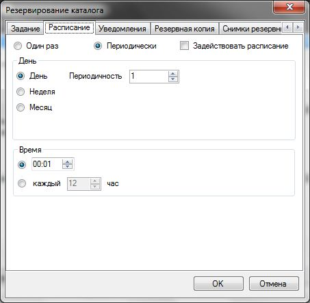
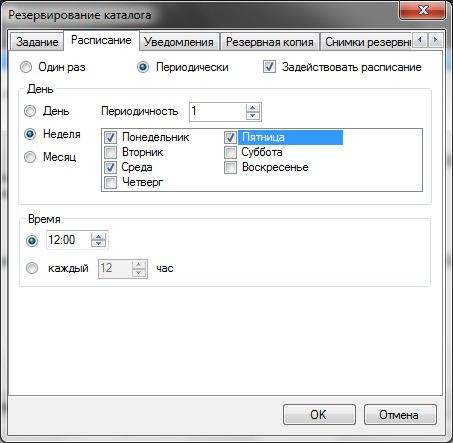
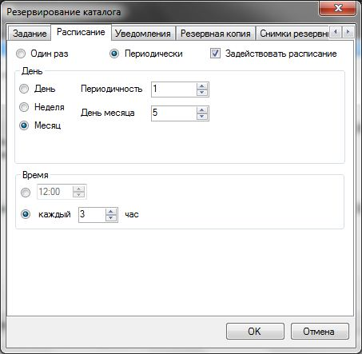

Настройка расписания заданий
Для настройки расписания для автоматического выполнения заданий необходимо воспользоваться вкладкой Расписание в настройках задания.

Для задействования автоматического выполнения заданий необходимо установить переключатель Задействовать расписание. Иначе настройки текущей вкладки действовать не будут.
При выставлении настроек следует придерживаться такой схемы:
Частота выполнения задания (один раз, периодически). Регулируется переключателями Один раз и Периодически соответственно. В первом случае задание выполниться только раз в установленные дату и время. Во втором случае задание будет выполняться в установленный период, заданный настройками.
Установка
даты выполнения задания. Дата задается в группе настроек День.
При
единовременном выполнении данная группа содержит только поле ввода
Дата,
которое устанавливает дату выполнения задания.
При периодическом
режиме запуска необходимо выбрать следующие переключатели: День,
Неделя,
Месяц, -
которые устанавливают периодичность запуска относительно одного дня,
недели или месяца соответственно. Далее в каждом из вариантов
необходимо выбрать периодичность
выполнения. По-умолчанию это значение равно 1,
т. е. Задание будет выполняться каждый день, каждую неделю,
каждый месяц. Для примера, если установить значение периодичности
равным 2, то задание будет выполняться каждый второй день, каждую
вторую неделю соответственно.
Установка времени выполнения задания. Эти настройки задаются в группе Время. Возможно установить 2 варианта выполнения по времени: установкой точного времени или периодичности выполнения в часах (например, каждые 6 часов).
Примеры настроек расписания
Выполнение задания единовременно
Задание выполниться один раз 11 февраля 2010 года в 15:00.
Периодическое выполнение задания

Задание будет выполняться каждую неделю в понедельник, среду, пятницу в 12:00.

Задание будет выполняться 5 числа каждого месяца каждые 3 часа в течении дня.